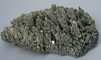

Numero atomico: 12
Massa atomica: 24,31
Temperatura di fusione (°C): 650
Temperatura di ebolizione (°C): 1090
Energia di prima ionizzazione (kj/mol): 738
Elettronegatività (secondo Pauling): 1,31
Densità: 1,74
Numeri di ossidazione: +2
Configurazione elettronica: 1s2, 2s2, 2p6, 3s2
Maggiori Informazioni